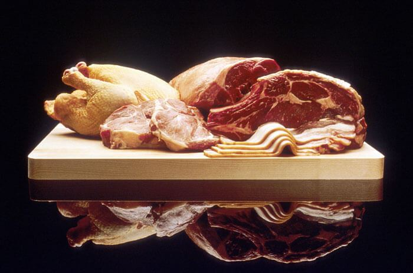
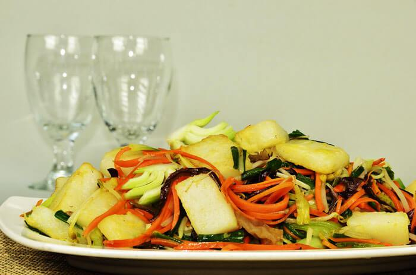
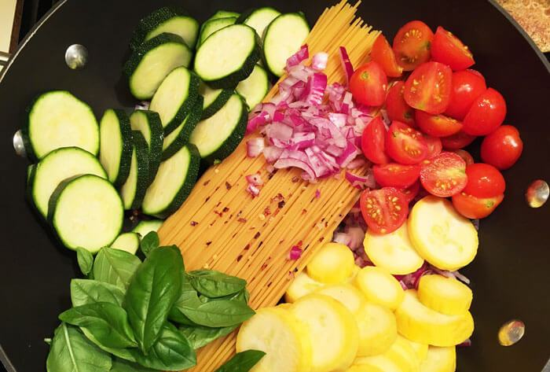
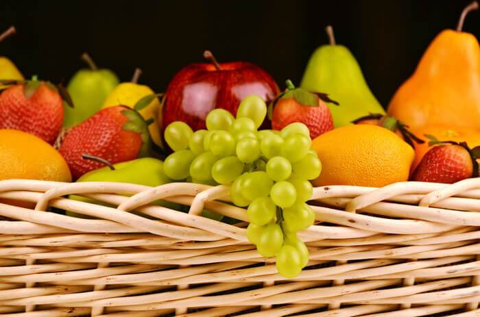

Day 1
Protein Day

Day 2
Starch Day

Day 3
Carbohydrate Day

Day 4
Fruit Day
TIPS
For all 90 days, breakfast is always FRUIT. Choices are two of the fruits from same tree such as: apples,
oranges, pears,
peaches, etc.
only ONE banana.
A cup of beries
Hand full of dried fruit. (around 8 pieces)